Protótipo para estudo. Consultas e conversas são simuladas; nenhum e-mail é enviado. Use dados fictícios.
Olá! O que você quer fazer hoje?
Escolha uma das três opções. Nada nesta tela se move sozinho.
Escolha uma opção. Você pode ver a consulta antes de ir.
- Agendar consulta5 etapas, sem limite de tempo
- Minhas consultasVer, confirmar, remarcar ou cancelar
- Como é a consultaPasso a passo com imagens e som opcional
- Ver como é a consulta4 passos com figuras
- Escovar os dentes5 passos. Depois acaba.
- Minha próxima consultaDia, hora e com quem
Próxima consulta
Quem está usando o app agora?
Use as setas do teclado para trocar. A tela se adapta: frases mais curtas e figuras para o Lucas.
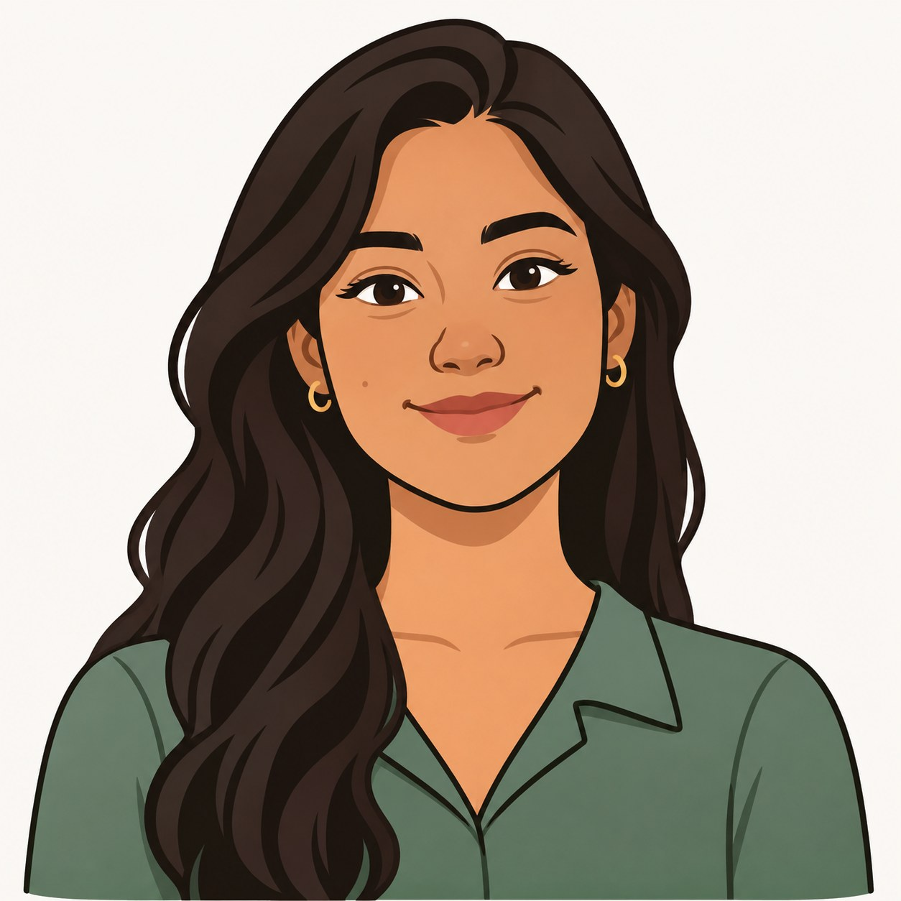
Marina23 anos · usa sozinha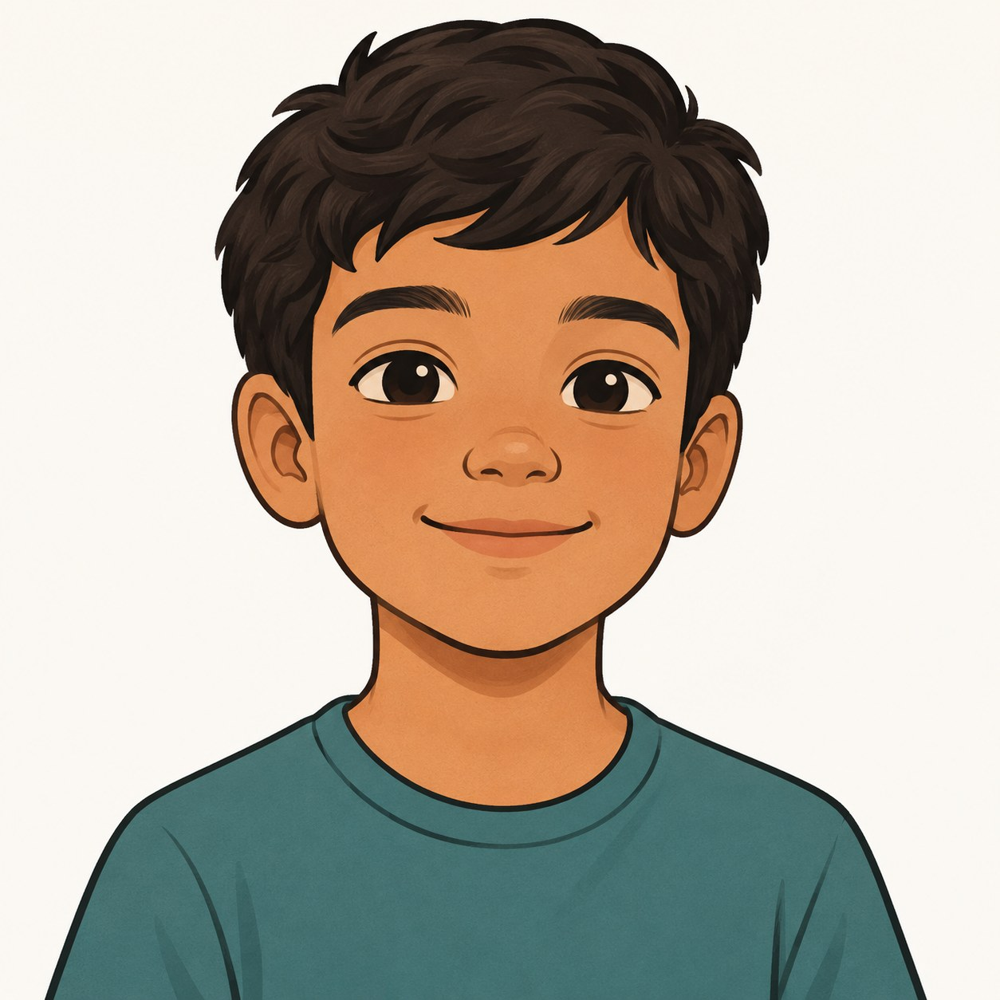
Lucas, com a mãe9 anos · figuras e frases curtas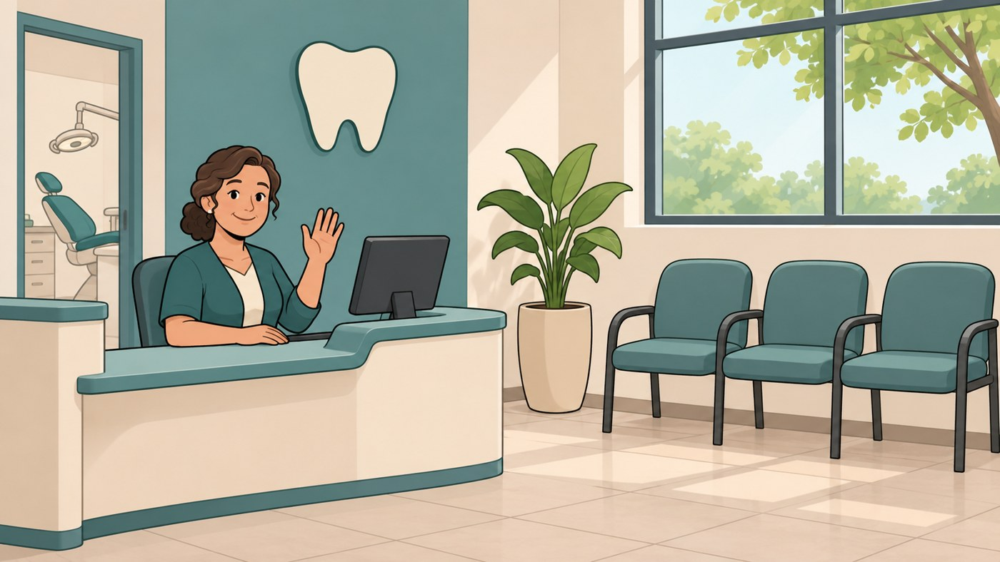
Mudança no visual prevista para 1º de dezembro
O menu continua no mesmo lugar. Nada muda sem você aceitar.
Agendar consulta
São 5 etapas. Não há limite de tempo: o que você preenche fica salvo neste aparelho, e você pode continuar depois.
- 1O quê
- 2Quando
- 3Conforto
- 4Seus dados
- 5Revisar
Etapa 1 de 5
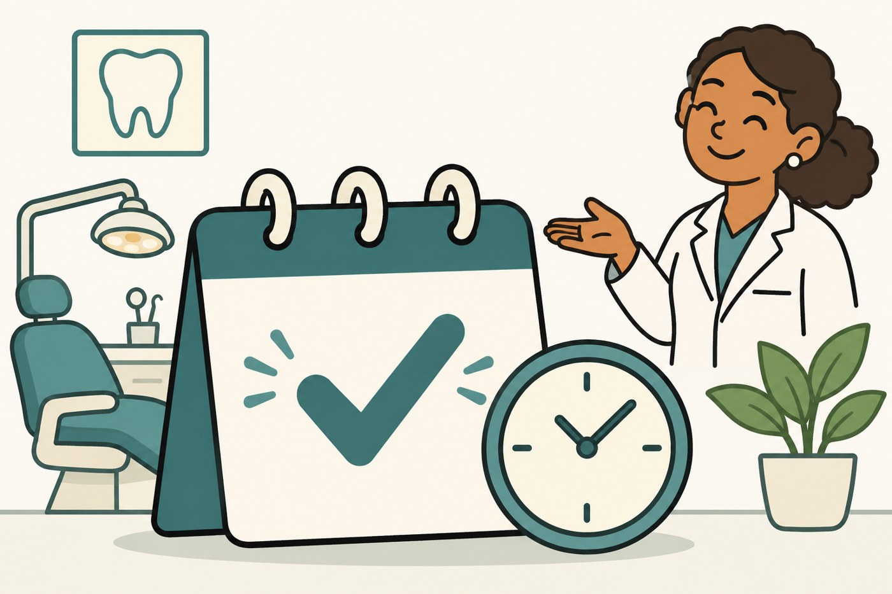
Pronto! Sua consulta está marcada
Guardamos tudo em “Minhas consultas”. Abaixo está exatamente o que vai acontecer.
Resumo da consulta
O que acontece agora
Como chegar
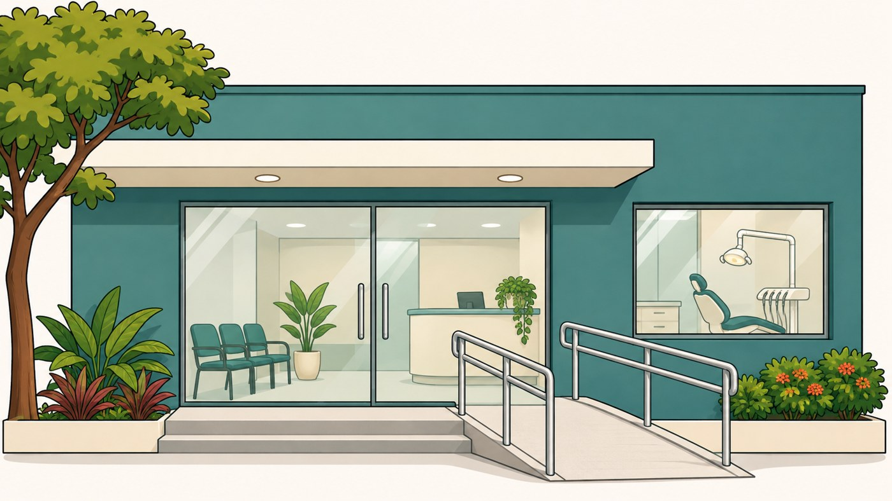
Endereço: Rua Episcopal, 120 – Centro, São Carlos (SP). Prédio térreo, com rampa.
Ao chegar: a porta é de vidro e abre para dentro. A recepção fica logo à frente. Diga seu nome ou mostre a tela “Minhas consultas”.
Barulho: a rua tem pouco movimento antes das 10h.
Minhas consultas
Aqui ficam as consultas marcadas e as que já aconteceram.
Como é a consulta
Conheça a consulta antes de ir. Escolha o formato que preferir: figuras, vídeo sem som ou a sala e o kit sensorial.
Passo 1 de 4
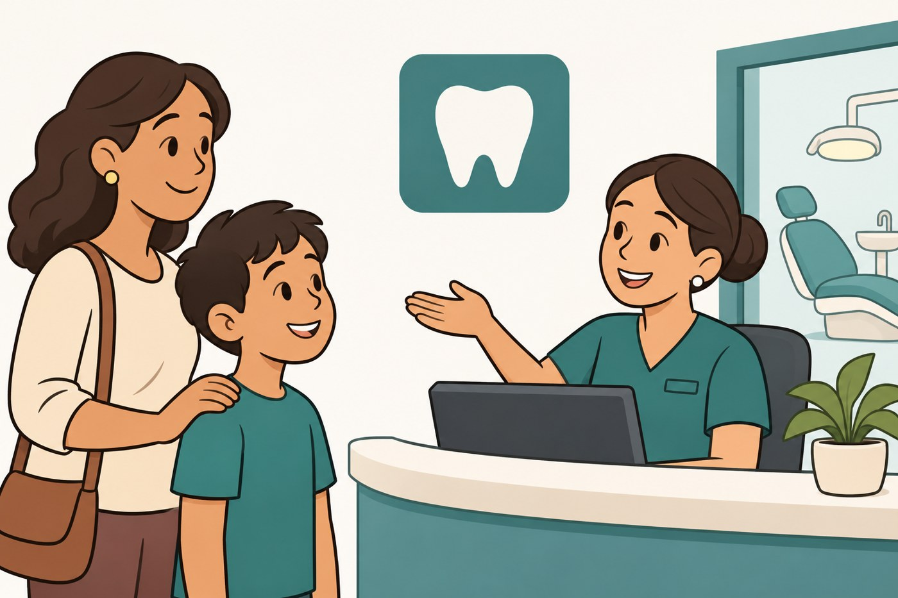
Dica: com o foco nos botões, as setas ← e → também mudam o passo.
O vídeo não começa sozinho e inicia com o som desligado. Ele dura 63 segundos. Para ouvir a descrição das cenas, ative a narração. As legendas já vêm ligadas. Use os controles do vídeo para tocar, pausar, voltar e ver em tela cheia.
Ler a transcrição completa do vídeo, com a descrição das imagens
- 0 a 17 segundos. Passo 1. Chegar e esperar. Lucas, um menino de cabelo escuro e camiseta verde, chega à recepção com a mãe. A recepcionista os recebe. Você pode falar seu nome ou mostrá-lo por escrito e esperar com seu acompanhante.
- 17 a 32 segundos. Passo 2. Sentar na cadeira. Lucas está sentado na cadeira odontológica verde, com a mãe ao lado. A dentista avisa antes de inclinar a cadeira. Você pode pedir uma pausa a qualquer momento.
- 32 a 48 segundos. Passo 3. A luz acende. Lucas usa óculos escuros na cadeira. A dentista mostra a luminária acima dele. Você pode combinar o uso de óculos escuros e de fones abafadores antes do atendimento.
- 48 a 63 segundos. Passo 4. Acabou. Lucas e a mãe caminham de mãos dadas em direção a uma casa. A dentista avisa quando a consulta termina. Você pega suas coisas e vai para casa com seu acompanhante.
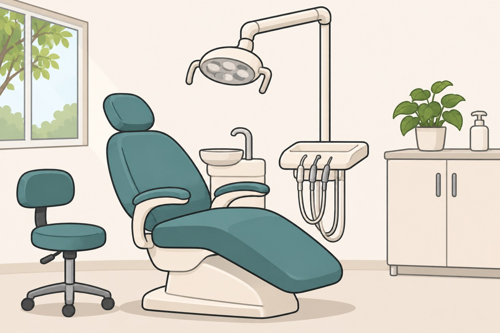
Você pode pedir
- Conhecer a sala e tocar nos instrumentos antes de começar.
- Que a dentista explique cada barulho antes de ligar o aparelho.
- Uma pausa, levantando a mão. A dentista para na hora.
- Que a consulta seja dividida em mais de um dia.
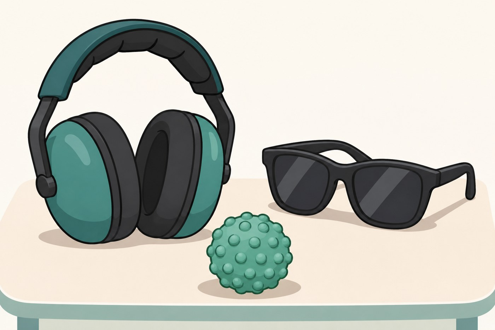
Kit sensorial da clínica
Fica na recepção. Peça quando chegar. Você também pode levar o seu.
- Fones abafadores: diminuem o barulho do motor.
- Óculos escuros: para a luz forte.
- Bolinha de apertar: para as mãos.
Teleconsulta
Demonstração por texto. As opções de câmera, áudio e legendas representam preferências; não há transmissão de som ou imagem.
Sua teleconsulta
Como você quer participar?
Você pode trocar a qualquer momento durante a consulta. Use as setas para escolher.
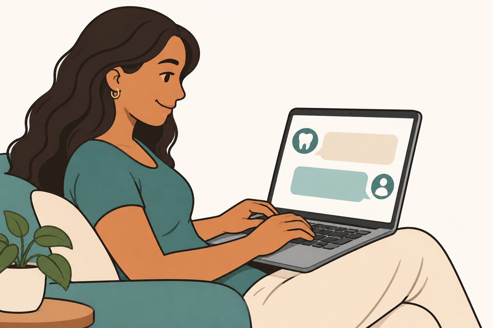
O que vai acontecer
- A Dra. Ana entra na sala e diz o nome dela.
- Ela faz 3 perguntas sobre o dente, uma de cada vez.
- Vocês combinam o próximo passo. A consulta acaba em até 15 minutos.
Sala de teleconsulta com a Dra. Ana Lima
A teleconsulta terminou
O resumo foi enviado para o seu e-mail. Próximo passo combinado: marcar a limpeza na clínica.
Escovar os dentes
São 5 passos. Cada passo tem um tempo. Quando o último passo acaba, a atividade acaba. Não tem compras, prêmio-surpresa nem propaganda.
Sequência ilustrativa: combine a técnica e o tempo de escovação com seu dentista. O temporizador demonstra a interação e não prescreve a duração do cuidado.
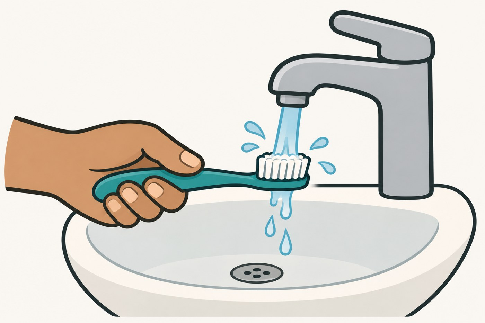
Faltam 30 segundos neste passo.
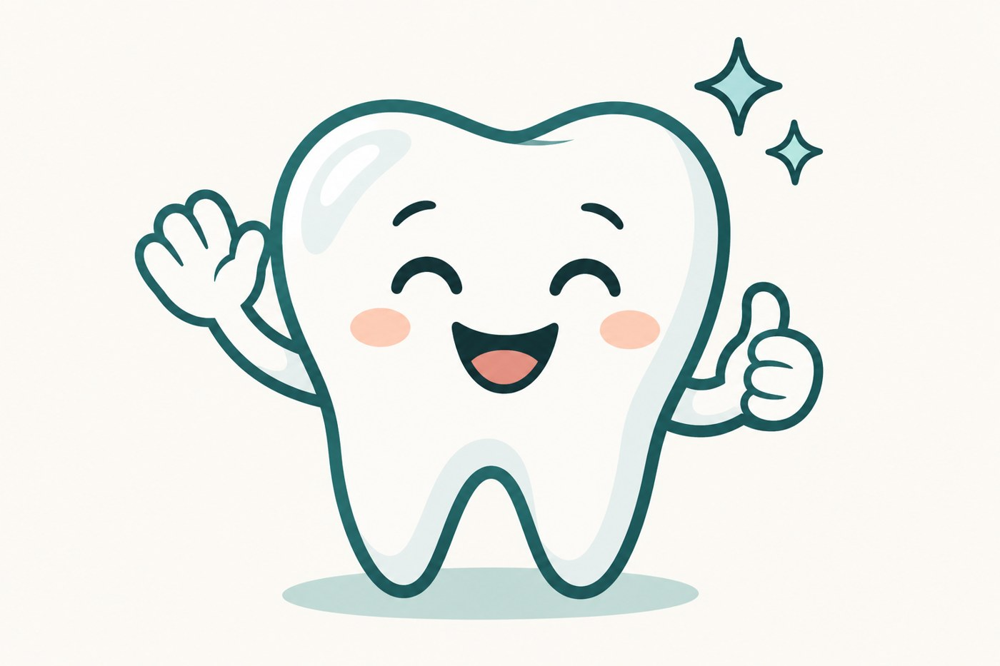
Acabou! Você escovou os dentes.
Agora: guardar a escova no copo.
A atividade de hoje terminou. Ela não começa de novo sozinha.
Ajuda por mensagem
Esta é uma simulação do atendimento humano proposto. As respostas são automáticas e não chegam a uma pessoa.
Você fala com uma pessoa da recepção, por escrito. Nenhum atendimento exige ligação ou menu de voz.
Conversa com a recepção
Atendimento de segunda a sexta, das 8h às 18h. Respondemos em até 10 minutos.
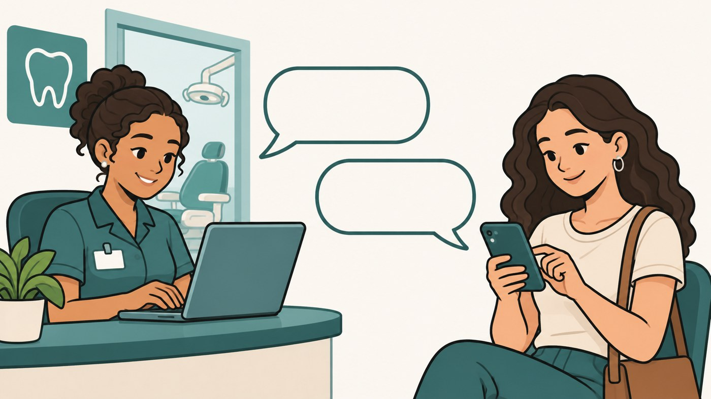
Perguntas frequentes
Outros jeitos de falar com a clínica
- E-mail: contato@clinicasorriso.exemplo (endereço fictício)
- WhatsApp, só mensagem escrita: (16) 99876-5432 (número fictício)
- Pessoalmente: Rua Episcopal, 120 – São Carlos (SP)
Prévia de estudo: a escolha fica salva, mas esta versão não instala uma nova interface automaticamente.
Novidades do app
Mudança prevista para 1º de dezembro de 2026
Avisamos com antecedência para você se preparar. Nada muda sem você aceitar.
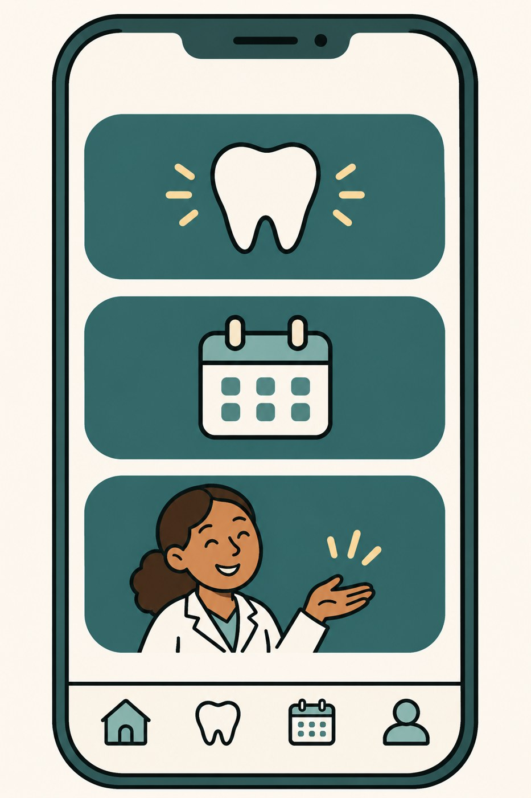
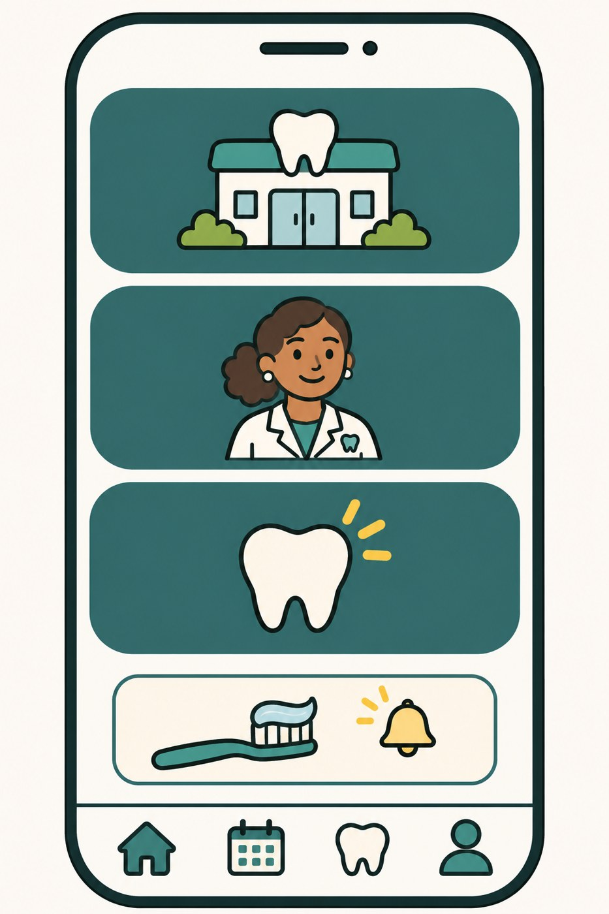
O que muda
- Os três botões principais ficam mais altos e ganham ícones.
- Aparece um lembrete de escovação no horário que você escolher.
O que não muda
- O menu continua no mesmo lugar, com os mesmos nomes.
- “Agendar consulta” continua sendo o primeiro botão.
- Suas preferências (modo calmo, tamanho do texto, contraste) continuam iguais.
Preferências
Ajuste o app do seu jeito. As mudanças valem na hora e ficam salvas neste aparelho.
Sons e movimento
Leitura e cores
Tamanho do texto: use os botões A−, A e A+ no topo da página (de 87,5% a 200%).
Modo bloqueado (para crianças)
Deixa abertas só as telas “Como é a consulta” e “Escovar os dentes”. Para sair, um adulto digita um PIN de 4 números.
Dados da demonstração
Apague consultas, conversas, cadastro e preferências salvos neste navegador.
Voltar ao começo
Volta todas as preferências ao padrão. Suas consultas não são apagadas.
Entrar sem senha
Você não precisa decorar senha nem resolver CAPTCHA. Mandamos um link para o seu e-mail; ao abrir o link, você entra.
Link enviado
O link vale por 24 horas. Se não chegar em 5 minutos, olhe a caixa de spam ou peça outro.
Acessibilidade deste site
Este site foi feito para pessoas autistas e seus responsáveis, e também para pessoas idosas. Seu desenvolvimento usa como referências a WCAG 2.2 (nível AA), a ABNT NBR 17225:2025, as recomendações do W3C para acessibilidade cognitiva (COGA) e as diretrizes AASPIRE para usuários autistas.
Recursos disponíveis
- Tamanho do texto de 87,5% a 200% pelos botões A−, A e A+, sem depender do zoom do navegador.
- Alto contraste (fundo preto, texto branco e amarelo) e tema escuro.
- Modo calmo, ligado por padrão: nada se move sozinho, sem sons, sem janelas que abrem sem pedido.
- VLibras: tradução do conteúdo para Libras pelo botão “Libras” no topo ou pelo ícone na lateral.
- Mais espaço entre linhas, letras e palavras.
- Ouvir textos da história social, só quando a pessoa toca no botão.
- Modo bloqueado com PIN para crianças.
Atalhos de teclado
| Tecla | O que faz |
|---|---|
| Alt + 1 | Vai para o conteúdo principal |
| Alt + 2 | Vai para o menu |
| Alt + 3 | Vai para o rodapé |
| Tab / Shift + Tab | Avança / volta entre links, botões e campos |
| Enter ou Espaço | Ativa o botão ou a opção em foco |
| ← → ↑ ↓ | Mudam a opção dentro de grupos (dias, horários, abas, perfil, canal) |
| Esc | Fecha o submenu “Mais opções” e as janelas de diálogo |
Onde usamos WAI-ARIA e para quê
| Elemento | Papel e atributos | Função |
|---|---|---|
| Interruptores (Modo calmo, câmera, sons, modo bloqueado) | role="switch", aria-checked | O leitor de tela anuncia “interruptor, ligado/desligado”, e não só “botão”. |
| Escolha de dia, horário, perfil e canal da teleconsulta | role="radiogroup", role="radio", aria-checked, aria-labelledby, aria-describedby | Grupo de opções customizado, navegável com as setas e com uma única parada de Tab. |
| Abas de “Como é a consulta” e “Minhas consultas” | role="tablist", role="tab", role="tabpanel", aria-selected, aria-controls | Mostra um formato por vez e informa qual aba está ativa. |
| Submenu “Mais opções”, perguntas frequentes e resumo de consultas anteriores | aria-expanded, aria-controls | Diz se o conteúdo está aberto ou fechado. |
| Menu, trilha e etapas do agendamento | aria-current="page" e aria-current="step" | Informa a página atual e a etapa atual. |
| Conversas (ajuda e teleconsulta) | role="log", aria-live="polite" | Novas mensagens são lidas sem tirar o foco do campo de texto. |
| Temporizador da escovação e tempo de tela | role="timer", role="progressbar", aria-valuenow, aria-valuetext | Mostra o tempo sem anunciar cada segundo (evita interrupções). |
| Campos de formulário | aria-invalid, aria-describedby, aria-required | Liga cada campo à sua dica e à mensagem de erro que explica como corrigir. |
| Resumo de erros e avisos | role="alert", role="status" | Avisa o resultado de uma ação sem mudar de página. |
| Botão Alto contraste e Legendas do vídeo | aria-pressed | Botão de alternância: informa se está pressionado. |
Para quem foi pensado e em que nível pode ser usado
| Público | Desafios considerados | Nível de uso esperado |
|---|---|---|
| Marina, 23 anos, autista nível 1 de suporte | Ansiedade com ligações e câmera, sobrecarga com telas cheias, linguagem ambígua, formulários com tempo-limite e CAPTCHA | Uso autônomo de todo o caminho de agendamento, teleconsulta por mensagens e ajuda por texto. |
| Lucas, 9 anos, autista nível 2 de suporte, com a mãe | Hipersensibilidade auditiva e visual, necessidade de rotina e previsibilidade, leitura em desenvolvimento | Uso com apoio do responsável para agendar; uso autônomo da história social e da escovação no modo bloqueado. |
| Pessoas idosas | Visão reduzida, menor precisão no toque, pouca familiaridade com padrões digitais, dificuldade com tempo-limite e senhas | Uso autônomo com texto ampliado até 200%, alvos de toque de 48 px, sem senha e sem tempo-limite. |
Os níveis de uso acima são objetivos de projeto, ainda sujeitos a avaliação com usuários autistas, pessoas idosas e tecnologias assistivas. Não constituem certificação de conformidade integral.
Ler o relatório de revisão e a matriz da ABNT em HTML · Baixar o relatório complementar (PDF)
Limitações conhecidas
- O VLibras depende do serviço do Governo Federal; sem internet, o botão “Libras” avisa que não carregou.
- O vídeo começa mudo e oferece narração descritiva opcional, legendas e transcrição. A qualidade da descrição e das traduções do VLibras deve ser validada com usuários.
- A clínica, os profissionais, os telefones e os e-mails são fictícios. As conversas são simuladas.
Encontrou uma barreira? Conte para nós por mensagem.
Créditos das imagens e do vídeo
As ilustrações foram recriadas com o gerador de imagens GPT da OpenAI em novembro de 2026. O logotipo e os ícones são vetoriais. O vídeo foi remontado com as quatro cenas GPT e narração descritiva sintética em português (voz Luciana do macOS), disponível por escolha do usuário. As pessoas e os ambientes ilustrados são fictícios. Os prompts completos constam da documentação complementar.
| Arquivo | Onde aparece | Origem |
|---|
Mapa do site
Todas as páginas, organizadas por assunto.
- Início
- Consultas
- Agendar consulta (5 etapas)
- Minhas consultas
- Teleconsulta
- Preparação
- Como é a consulta (figuras, vídeo, sala e kit sensorial)
- Escovar os dentes
- Conta e ajuda
- Sobre o site
Não encontramos esta página
O endereço pode ter sido digitado errado. Você pode voltar ao início ou abrir o mapa do site.